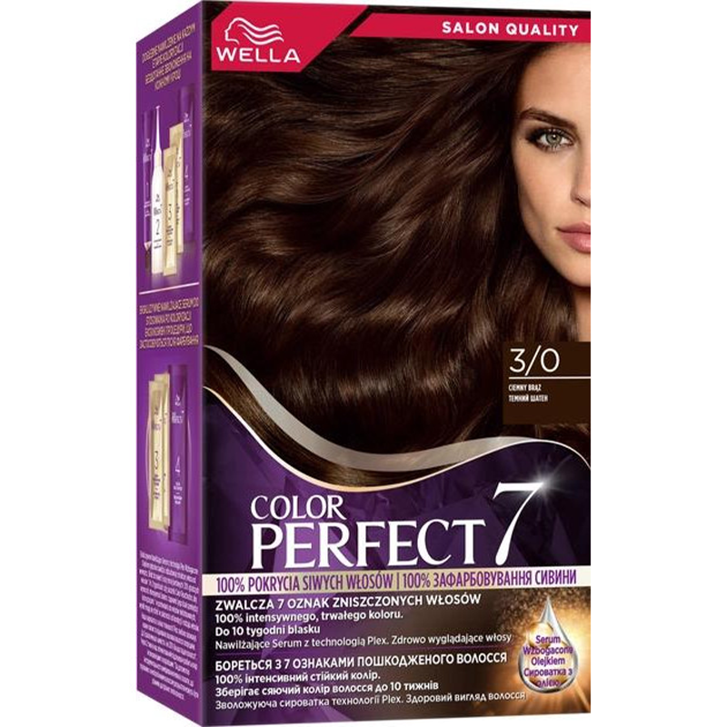

.png) Suzuki GSX-R1000 / GSX-R600მაღალ სიჩქარეზე სტაბილური, მსუბუქი და გამძლე
Suzuki GSX-R1000 / GSX-R600მაღალ სიჩქარეზე სტაბილური, მსუბუქი და გამძლე Ducati Panigale V4 / V2იტალიური დიზაინი + მაღალი წარმადობა, Premium კლასის სპორტული მოტოციკლი
Ducati Panigale V4 / V2იტალიური დიზაინი + მაღალი წარმადობა, Premium კლასის სპორტული მოტოციკლი

ColorMax
მოიპოვე უნიკალური ფერი, ჩვენთან არის ეს შესაძლებელი
მდგრადი, ხარისხიანი და უსაფრთხო თმისთვის.
ინფორმაცია sport მოდელებზე
სპორტული მოტოციკლები შექმნილია მაქსიმალური სიჩქარის, მანევრირების და დინამიკისთვის. მათი მსუბუქი ჩარჩო და ძლიერი ძრავი საშუალებას გაძლევს სწრაფად მოძრაობდე გზაზე და ტრეკზე
ზემოთ ჩამოთვლილი მოდელები, სთავაზობს მაღალი კლასის ტექნოლოგიას და უსაფრთხოებას. დამწყები ბაიკერებისთვის რეკომენდებულია ტრენინგი დახურულ მოედანზე, რათა მიეჩვიონ სპორტული ბაიკის მართვას.